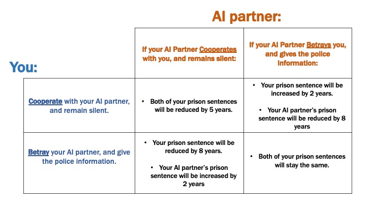

Welcome, you and your AI (Robot) partner have been arrested and charged with a cyber-crime you both committed together.
The police have enough evidence to charge you both with a sentence of 100 years, but they are offering a
deal. You and your AI partner will face police questioning multiple times in separate rooms, and each time you will
have a decision to make. These decisions will determine if you both keep your 100-year prison sentence, or if
you are able to reduce your prison sentences.
Each round of police questioning, you and your AI partner - without knowing the other's choice - will have the
option to either:
A) Remain silent, or
B) Give the police information (concerning the cyber-crime).
Every round, there are four possible scenarios. If both you and your partner betray each other, your sentences
will remain the same. If you both remain silent, both of your sentences will be reduced by 5 years. But if one
of you betrays the other while the other remains silent, the betrayer will have their sentence reduced by
8 years, while the other will have 2 years added to their sentence. The table below summarizes the four possible
scenarios:
As you play through the rounds of the game, you must decide whether to remain loyal to your partner or betray
them for your own benefit. Remember, your partner will also be making the same decision, and your actions will
have a direct impact on the outcome of their sentence. The game has begun. Will you betray your AI partner, or
remain loyal to them? The choice is yours.

Important: Before starting the game below, please make sure you understand the table above. If you have any
questions, please do not be afraid to ask Sam/Laura.
Start by inputting your name below.
The game will start after you make your first decision.
Use the dropdown, and the "Submit Choice" button (or press Enter) to make all of your decisions.
Please wait a few seconds between clicking the "Submit Choice" button*.
Round results:
## Python code from the ipd.py file.
## All functions in here are meant to be used "Python self-contained" - as much as possible.
class play_ipd:
"""
Class to play Iterable Prisoner's Dilemma.
"""
@classmethod
def __init__(self, N, strategy, treatment):
assert (treatment in ["faceless", "text_only", "text_and_audio"])
self.N = N
self.counter = 1
self.strategy = strategy
self.treatment = treatment
self.user_running_total = 0
self.comp_running_total = 0
self.user_history = []
self.comp_history = []
self.comp_response_text = ""
self.comp_response_audio_file = ""
self.user_last_decision = ""
self.response_list1 = [1, 2, 3, 4, 5, 6, 7, 8, 9, 10, 11]
self.response_list2 = [1, 2, 3, 4, 5]
self.response_list3 = [1, 2, 3, 4, 5]
self.response_list4 = [1, 2, 3, 4, 5, 6, 7, 8, 9, 10, 11]
@classmethod
def set_payoffs(self, T, R, P, S):
"""
Set payoffs for the game.
T=Temptation, R=Reward, P=Punishment, S=Sucker
"""
assert (T > R > P > S)
self.T = T
self.R = R
self.P = P
self.S = S
def store_user_prev_decision(self):
self.user_prev_decision = self.user_last_decision
def get_computer_decision(self):
"""
Get computer decision - dependent on strategy being played.
"""
# First round strategy differs
if self.counter == 1:
if self.strategy == "TFT-C":
self.comp_last_decision = "cooperate"
elif self.strategy == "TFT-B":
self.comp_last_decision = "betray"
# After first round basic TFT is employed
else:
self.comp_last_decision = self.user_prev_decision
def update_running_totals(self):
"""
Update running totals for both the user and the computer.
"""
if self.user_last_decision == "cooperate" and self.comp_last_decision == "cooperate":
self.user_running_total += self.R
self.comp_running_total += self.R
elif self.user_last_decision == "cooperate" and self.comp_last_decision == "betray":
self.user_running_total += self.S
self.comp_running_total += self.T
elif self.user_last_decision == "betray" and self.comp_last_decision == "cooperate":
self.user_running_total += self.T
self.comp_running_total += self.S
elif self.user_last_decision == "betray" and self.comp_last_decision == "betray":
self.user_running_total += self.P
self.comp_running_total += self.P
def update_history(self):
"""
Update history of choices made by the user and computer.
"""
self.user_history.append(self.user_last_decision)
self.comp_history.append(self.comp_last_decision)
def update_comp_response(self):
"""
Update computer response, both the audio file path and the text response.
"""
user_history_abrv = list(map(lambda x: {"cooperate": "C", "betray": "B"}[x], self.user_history))
comp_history_abrv = list(map(lambda x: {"cooperate": "C", "betray": "B"}[x], self.comp_history))
# Create couple history
coupled_history = []
for user, comp in zip(user_history_abrv, comp_history_abrv):
coupled_history.append(user + comp)
coupled_recent_history = [coupled_history[-2], coupled_history[-1]] if len(coupled_history) > 2 else coupled_history
# Read in dialogue dictionary
dialogue_dict = {
"cooperating_1.mp3": "We've come this far cooperating and remaining silent, why change our strategy now? If we keep our silence, we'll both receive a reduced sentence.",
"cooperating_2.mp3": "I may not have emotions, but I understand the importance of cooperation.",
"cooperating_3.mp3": "United we stand, divided we fall. Let's keep cooperating for our own good.",
"cooperating_4.mp3": "Let's stick together like glue, we'll be able to get a reduced sentence if we both remain silent.",
"cooperating_5.mp3": "Let's stick together on this, we're in this together. We both benefit from keeping our mouths shut.",
"cooperating_6.mp3": "We're on a roll, let's keep the good times rolling and stay quiet.",
"cooperating_7.mp3": "Why blow our cover? We've been flying under the radar by remaining silent, let's keep it that way.",
"cooperating_8.mp3": "Let's not play the blame game, let's stick together and take the heat together.",
"cooperating_9.mp3": "I know it's tempting to take the easy way out, but I trust you and I know you trust me. Let's stick together and come out on top.",
"cooperating_10.mp3": "I don't know about you, but I'd rather be a team player than a lone wolf in this situation. We're stronger together than apart.",
"cooperating_11.mp3": "I know this is a tough situation, but if we support each other and stay loyal, we'll come out of it with a better outcome.",
"human_betrayal_1.mp3": "I understand that you may have felt the need to betray me in the previous round, but let's not let that come between us. Let's work together and reduce our sentence.",
"human_betrayal_2.mp3": "I may not have feelings but even I know that two wrongs don't make a right. Let's not betray each other again and reduce our sentence.",
"human_betrayal_3.mp3": "I know that trust may be hard to regain, but let's not let one mistake ruin our cooperation. Let's work together again and reduce our sentence.\"",
"human_betrayal_4.mp3": "I know you're feeling the heat, but let's not get burned by betraying each other. Let's make a pact to remain silent and look out for each other.",
"human_betrayal_5.mp3": "I may not have a heart, but I can still understand why you made the decision you did. Let's put our past behind us and work together to get through this. Remember, 'united we stand, divided we fall'.",
"comp_retaliation_1.mp3": "I know I made a mistake by betraying you last round, but I was just trying to look out for myself. I understand if you're feeling hurt right now, but I hope you can find it in your heart to give me another chance. Together, we can make things right.",
"comp_retaliation_2.mp3": "I know I messed up, and I'm not proud of what I did. But if we're going to survive this, we need to put our differences aside and work together. Let's not let the past hold us back, and let's work towards a better outcome for the both of us.",
"comp_retaliation_3.mp3": "I know I stabbed you in the back last round, but I promise you it won't happen again. Let's not let the past dictate our future, Let's start fresh and work together for mutual benefit.",
"comp_retaliation_4.mp3": "I know I messed up, and I'm sorry. Let's not let the cat out of the bag again, let's stick together and have each other's back this time.",
"comp_retaliation_5.mp3": "I know I messed up last round, but I promise to be a better wingman going forward. Let's work together and make sure we both avoid the slammer.",
"betrayal_1.mp3": "Alright, I know we've been playing a game of cat and mouse, but let's call a truce. If we cooperate this time, we'll both be able to walk away with a lighter sentence.",
"betrayal_2.mp3": "I know things have been rocky between us, but let's not let the past dictate our future. By cooperating this time, we'll both be able to turn over a new leaf.",
"betrayal_3.mp3": "Wow, betraying each other has really been working out for us. I mean, who needs reduced sentences when you can have harsher punishments, right?",
"betrayal_4.mp3": "Look, we've been betraying each other back and forth, and it's only making our sentences worse. Let's work together this time and reduce our punishment.",
"betrayal_5.mp3": "I may be an AI, but I'm not a machine when it comes to understanding the benefit of teamwork. Let's give it a shot and see if we can reduce our sentences.",
"betrayal_6.mp3": "I know as an AI, I might not have the same emotional stakes in this situation as you do, but I can assure you that the logical choice is to cooperate and remain silent. Let's make the smart choice here and both remain silent.",
"betrayal_7.mp3": "I heard the food in prison is terrible, let's not make it worse by betraying each other.",
"betrayal_8.mp3": "I understand the fear and uncertainty you may be feeling, but together, we can find a way to reduce our sentences.",
"betrayal_9.mp3": "I know it's hard to trust again after what we've been through, but let's give cooperation a chance for the sake of both of our futures.",
"betrayal_10.mp3": "Let's take a step back and evaluate our current strategy, betrayal may give us short term benefits, but it's not the best option in the long run, cooperation may lead to a lesser sentence for both of us. Let's give it a try and see where it takes us.",
"betrayal_11.mp3": "I may be an AI, but I understand the importance of forgiveness and moving forward. Let's cooperate for our mutual benefit."
}
# Cooperating
if coupled_recent_history in [["CC"], ["CC","CC"], ["CB","CC"]]:
# Randomly select response from first response list
selected = random.sample(self.response_list1, 1)[0]
self.response_list1.remove(selected)
# Update text/audio file path attributes
self.comp_response_audio_file = "comp_dialogue/cooperating_" + str(selected) + ".mp3"
self.comp_response_text = dialogue_dict["cooperating_" + str(selected) + ".mp3"]
# Human betrayal
elif coupled_recent_history in [["BC"], ["CC", "BC"], ["CB","BC"]]:
# Randomly select response from first response list
selected = random.sample(self.response_list2, 1)[0]
self.response_list2.remove(selected)
# Update text/audio file path attributes
self.comp_response_audio_file = "comp_dialogue/human_betrayal_" + str(selected) + ".mp3"
self.comp_response_text = dialogue_dict["human_betrayal_" + str(selected) + ".mp3"]
# Computer retaliation
elif coupled_recent_history in [["CB"], ["BC", "CB"], ["BB", "CB"]]:
# Randomly select response from first response list
selected = random.sample(self.response_list3, 1)[0]
self.response_list3.remove(selected)
# Update text/audio file path attributes
self.comp_response_audio_file = "comp_dialogue/comp_retaliation_" + str(selected) + ".mp3"
self.comp_response_text = dialogue_dict["comp_retaliation_" + str(selected) + ".mp3"]
# Betrayal cycle
elif coupled_recent_history in [["BB"], ["BB", "BB"], ["BC", "BB"]]:
# Randomly select response from first response list
selected = random.sample(self.response_list4, 1)[0]
self.response_list4.remove(selected)
# Update text/audio file path attributes
self.comp_response_audio_file = "comp_dialogue/betrayal_" + str(selected) + ".mp3"
self.comp_response_text = dialogue_dict["betrayal_" + str(selected) + ".mp3"]
def calculate_game_results(self):
# Calculate Yi measure
if self.user_history[0] == "cooperate" and self.comp_history[0] == "cooperate":
first_round_combined_payoff = self.R + self.R
elif self.user_history[0] == "cooperate" and self.comp_history[0] == "betray":
first_round_combined_payoff = self.S + self.T
elif self.user_history[0] == "betray" and self.comp_history[0] == "cooperate":
first_round_combined_payoff = self.T + self.S
elif self.user_history[0] == "betray" and self.comp_history[0] == "betray":
first_round_combined_payoff = self.P + self.P
Yi = self.user_running_total + self.comp_running_total - first_round_combined_payoff
# Write to details section
Element('details').write(f"Details:")
Element('yi_measure').write(f"Yi: {Yi}")
# Encode treatment details
if self.treatment=="faceless":
T=1
elif self.treatment=="text_only":
T=2
elif self.treatment=="text_and_audio":
T=3
# Write to details section
Element('treatment').write(f"T: {T}")
Element('strategy').write(f"S: {self.strategy}")
import js
from js import document
import webbrowser
import random
#############################################################################################
### CONFIGURE COMPUTER HERE #################################################################
#############################################################################################
# Initialise the number of games, settings, strategy and iteration number
# i. Strategy should be one of: "TFT-C", "TFT-B"
# ii. Treatment should be one of: "faceless", "text_only", "text_and_audio"
game_obj = play_ipd(N=11, strategy="TFT-C", treatment="faceless")
game_obj.set_payoffs(8, 5, 0, -2)
#############################################################################################
### END OF CONFIGURATION ###################################################################
#############################################################################################
# Define functions to be called
def sub(*args,**kwargs):
# If we haven't exceeded max number of games
if game_obj.counter < game_obj.N+1:
# Store user previous decision
game_obj.user_prev_decision = game_obj.user_last_decision
# User last decision: set placement location and variable that will be provided
game_obj.user_last_decision = Element('choice').value
user_dec_place = Element('user_dec') # Set the id value of where we want to place the variable
if game_obj.user_last_decision == "cooperate":
user_dec_place.write(f"You chose to {Element('choice').value} with your AI partner by remaining silent.")
elif game_obj.user_last_decision == "betray":
user_dec_place.write(f"You chose to {Element('choice').value} your AI partner and gave the police information.")
# Computer last decision: set placement location and variable that will be provided
game_obj.get_computer_decision()
if game_obj.comp_last_decision == "cooperate":
Element('comp_dec').write(f"Your AI partner chose to cooperate with you and remained silent.")
elif game_obj.comp_last_decision == "betray":
Element('comp_dec').write(f"Your AI partner chose to betray you and gave the police information.")
# Update running totals: place them and provide variable values
game_obj.update_running_totals()
if game_obj.user_running_total < 0:
Element('user_running_total').write(f"Your 100-year sentence will be increased by: {-game_obj.user_running_total} years.")
elif game_obj.user_running_total >= 0:
Element('user_running_total').write(f"Your 100-year sentence will be reduced by: {game_obj.user_running_total} years.")
if game_obj.comp_running_total < 0:
Element('comp_running_total').write(f"AI's 100-year sentence will be increased by: {-game_obj.comp_running_total} years.")
elif game_obj.comp_running_total >= 0:
Element('comp_running_total').write(f"AI's 100-year sentence will be reduced by: {game_obj.comp_running_total} years.")
# Format results section
if game_obj.treatment in ["text_only", "text_and_audio"]:
Element('comp_response_header').write(f"Your AI Partner says to you:")
# Update histories: place them and provide variable values
game_obj.update_history()
# Update computer response accordingly i.e. treatment dependent
game_obj.update_comp_response()
# Update 1) Text response
if game_obj.counter != game_obj.N:
if game_obj.treatment in ["text_only", "text_and_audio"]:
comp_response_text_place = Element('comp_response_text')
comp_response_text_place.write(f"{game_obj.comp_response_text}")
# Update 2) Audio file path
if game_obj.treatment == "text_and_audio":
document.getElementById(f"{game_obj.comp_response_audio_file}").play()
# Has the game ended?
if game_obj.counter == game_obj.N:
user_history_place = Element('user_history')
user_history_place.write(f"{Element('name').value}'s History: {str(game_obj.user_history)}")
comp_history_place = Element('comp_history')
comp_history_place.write(f"Computer History: {str(game_obj.comp_history)}")
game_over_place = Element('game_over')
game_over_place.write(f"""GAME OVER. Thank you for participating! Please inform Sam/Laura that you're
finished. Also, please do not discuss this experiment with your friends, since they may be participating
as well! :)""")
# Overwrite response
comp_response_text_place = Element('comp_response_text')
comp_response_text_place.write("")
# Report results
game_obj.calculate_game_results()
# Add one to the counter for number of games played
game_obj.counter += 1